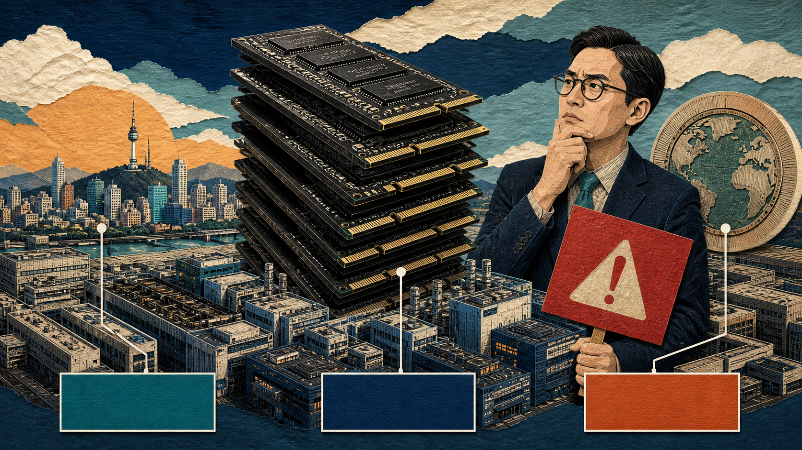
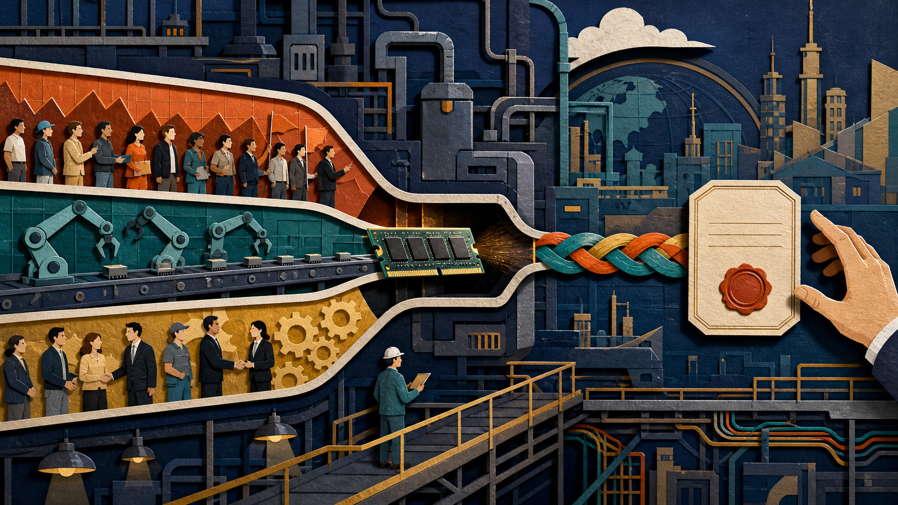
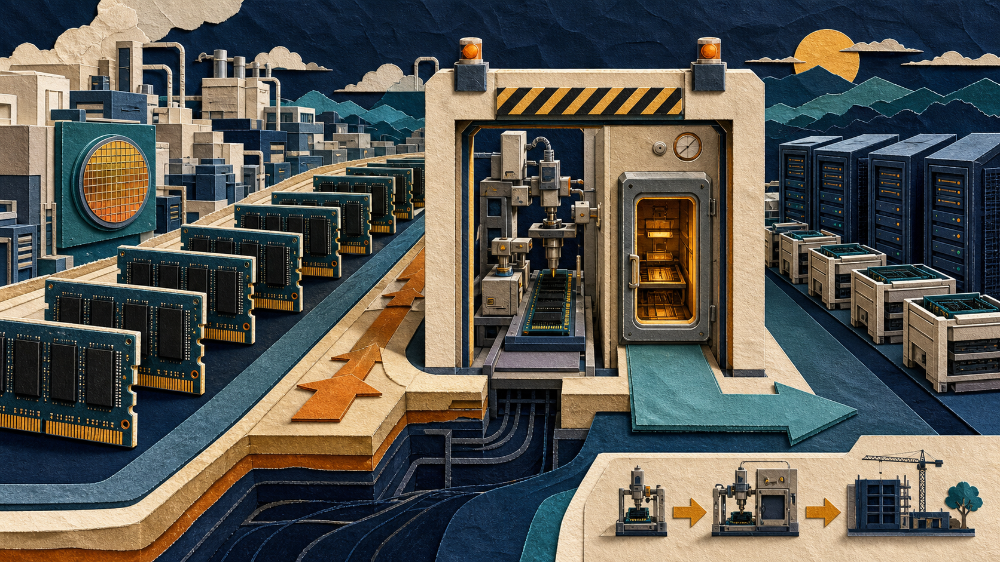
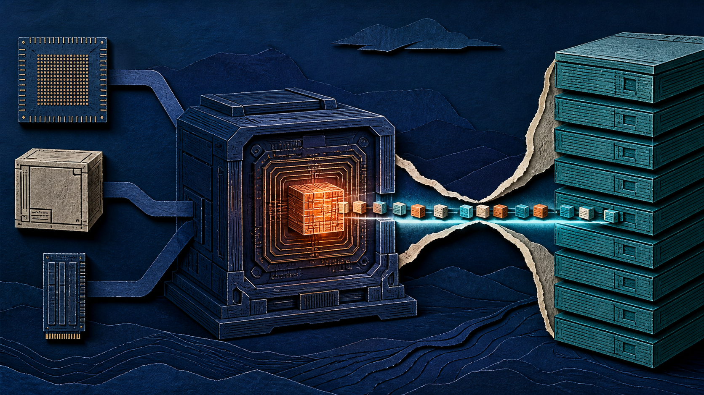
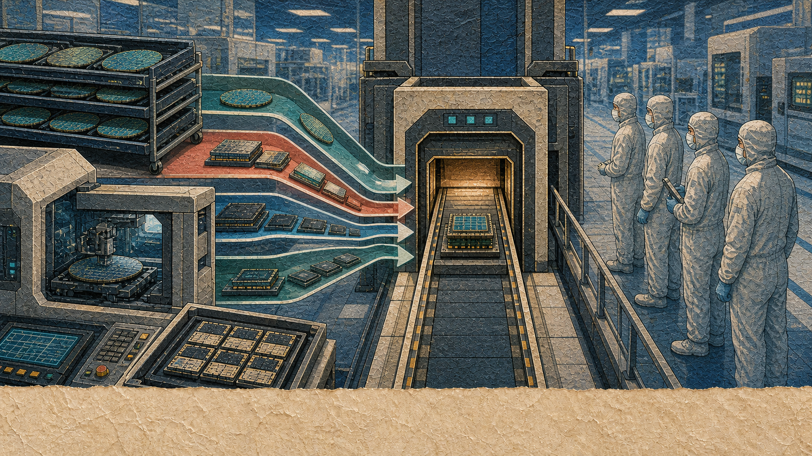
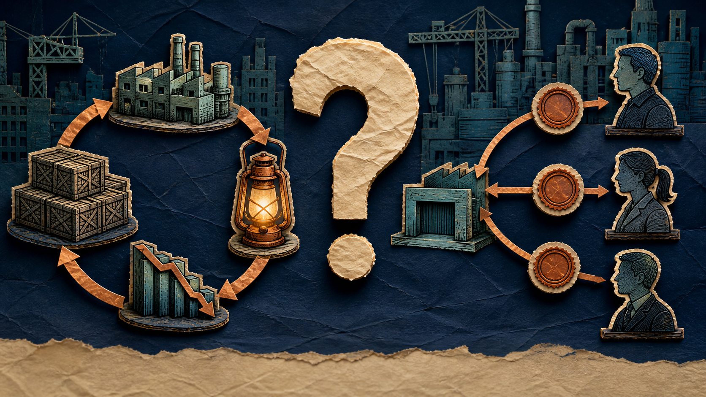
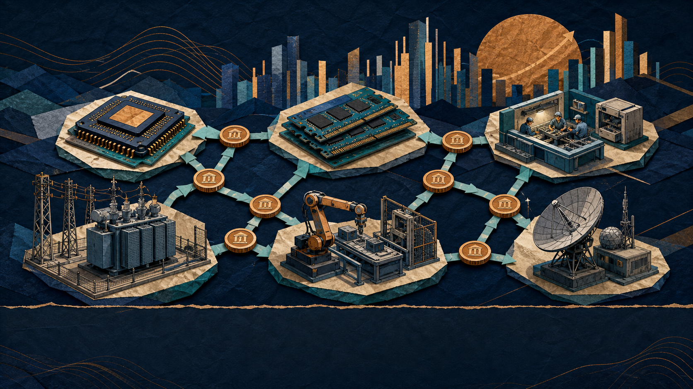

hero-wrong-bubble-v1
contextual review
Contextual hero plate; needs a human check for immediate visual read.
The market may be labeling the wrong bubble.
Evidence cards: 0
No evidence card
30 timed world beats from the current review cut. This is a grouped human-review sheet—not a new approval state. The ambiguous safe-default-inspection-v1 city-box plate is absent; evidence cards remain subordinate and whole-stamped.
contextual review
Contextual hero plate; needs a human check for immediate visual read.
The market may be labeling the wrong bubble.
Evidence cards: 0
No evidence card

contextual review
Contextual hero plate; needs a human check for immediate visual read.
The market may be labeling the wrong bubble.
AI memory stocks have gone vertical and the earnings numbers
look almost fake. That is normally where sensible people step
back and say: bubble. But underneath the chart
Evidence cards: 1
silicon-antidote-s14-teacher-stamped
replacement applied
Literal bubble-reflex replacement for the removed city-box plate.
back and say: bubble. But underneath the chart
Evidence cards: 0
No evidence card

contextual review
Contextual hero plate; needs a human check for immediate visual read.
back and say: bubble. But underneath the chart
is a product customers cannot get enough of,
factories that cannot expand quickly enough, and buyers signing
multi-year take-or-pay contracts just to guarantee supply.
Evidence cards: 1
silicon-antidote-s11-teacher-stamped
direct mechanism
Mechanism plate; review that its visual read lands before the next cut.
multi-year take-or-pay contracts just to guarantee supply.
Meanwhile, the trade marketed as boring and
diversified—the S&P 500 index
fund—has nearly forty percent of its weight concentrated in
ten companies, while automatic contributions keep buying them
because they are already the biggest. So here is the argument:
Evidence cards: 2
silicon-reality-gap-s12-teacher-stamped, silicon-reality-gap-s02-teacher-stamped

contextual review
Contextual hero plate; needs a human check for immediate visual read.
because they are already the biggest. So here is the argument:
the memory trade can absolutely correct.
It can become overpriced. It can still be brutally cyclical.
But what we are seeing today looks more like a physical bottleneck being repriced
than a demand-free fantasy. Bubble logic may be
Evidence cards: 1
silicon-value-software-bubble-s01-teacher-stamped
replacement applied
Literal hidden-feedback replacement for the removed city-box plate.
than a demand-free fantasy. Bubble logic may be
hiding inside the thing investors stopped examining because
they were told it was safe.
A bubble is not “a price went up a lot.”
That is a symptom, not a diagnosis.
Evidence cards: 1
silicon-reality-gap-s12-teacher-stamped
sentence matched
Sentence-native plate; review visual readability against its displayed narration.
That is a symptom, not a diagnosis.
A real bubble forms when the price increasingly depends on the belief that
somebody else will pay more, while the cash flow,
Evidence cards: 1
silicon-antidote-s14-teacher-stamped
contextual review
Contextual hero plate; needs a human check for immediate visual read.
somebody else will pay more, while the cash flow,
productive use, or scarcity underneath it cannot
keep up. Think of two elevators rising at the same speed.
One is being pulled by a steel cable. The other is rising because
everyone inside jumped at once. The chart looks identical
for half a second. The mechanism is completely different.
Evidence cards: 1
silicon-antidote-s02-teacher-stamped
replacement applied
Literal hidden-feedback replacement for the removed city-box plate.
for half a second. The mechanism is completely different.
So we need to look under both elevators. For memory,
the cables are demand, capacity, contracts, and cash flow.
Evidence cards: 0
No evidence card
contextual review
Contextual hero plate; needs a human check for immediate visual read.
the cables are demand, capacity, contracts, and cash flow.
Evidence cards: 0
No evidence card
direct mechanism
Mechanism plate; review that its visual read lands before the next cut.
the cables are demand, capacity, contracts, and cash flow.
For the S&P 500 complex, the question is whether diversification
has quietly become concentration—and whether automatic
demand is helping investors ignore the price of that concentration.
Evidence cards: 1
silicon-antidote-s10-teacher-stamped
direct mechanism
Mechanism plate; review that its visual read lands before the next cut.
demand is helping investors ignore the price of that concentration.
Start with the product. High-bandwidth memory,
or HBM, is not ordinary storage.
It is stacked working memory placed beside an AI accelerator so
enormous amounts of data can reach the processor quickly.
Evidence cards: 2
memory-supercycle-s08-teacher-stamped, sovereign-memory-infrastructure-s04-teacher-stamped

direct mechanism
Mechanism plate; review that its visual read lands before the next cut.
enormous amounts of data can reach the processor quickly.
Plain English: the GPU may be the engine,
but HBM is the pressure-rated fuel system.
Build a larger engine without widening the fuel line and the expensive engine
sits there starving. That is why every serious AI
architecture—whether it uses GPUs, custom accelerators,
or specialized processors—has to solve memory bandwidth and
capacity. And this is where the shortage becomes physical.
Evidence cards: 1
memory-supercycle-s02-teacher-stamped

sentence matched
Sentence-native plate; review visual readability against its displayed narration.
capacity. And this is where the shortage becomes physical.
Evidence cards: 1
memory-supercycle-s03-teacher-stamped
direct mechanism
Mechanism plate; review that its visual read lands before the next cut.
capacity. And this is where the shortage becomes physical.
HBM competes for advanced wafers, clean-room space,
packaging capacity, equipment, engineers,
and time. New generations also use
larger dies and more complicated stacks.
Evidence cards: 1
sovereign-memory-infrastructure-s11-teacher-stamped
direct mechanism
Mechanism plate; review that its visual read lands before the next cut.
larger dies and more complicated stacks.
Imagine a bakery with a fixed number of ovens.
Yesterday it made simple loaves. Today its most
valuable customer wants twelve-layer wedding cakes.
Each cake earns more, but it also occupies more oven space,
takes longer, and has more opportunities to fail.
Producing more cakes can mean producing fewer loaves.
Evidence cards: 0
No evidence card
sentence matched
Sentence-native plate; review visual readability against its displayed narration.
Producing more cakes can mean producing fewer loaves.
As manufacturers devote more capacity to HBM,
Evidence cards: 0
No evidence card
direct mechanism
Mechanism plate; review that its visual read lands before the next cut.
As manufacturers devote more capacity to HBM,
they also pressure conventional DRAM supply.
The AI boom pulls the same production system toward more complex products.
Micron says HBM’s growing trade ratio is pressuring
non-HBM supply and new fabs take years.
Samsung says concentrating capacity on HBM and server
Evidence cards: 3
memory-supercycle-s08-teacher-stamped, silicon-value-software-bubble-s11-teacher-stamped, silicon-antidote-s10-teacher-stamped
direct mechanism
Mechanism plate; review that its visual read lands before the next cut.
Samsung says concentrating capacity on HBM and server
products limits cutting-edge supply for PCs and phones.
This is not proof that any stock price is fair.
It is proof that the underlying shortage is not imaginary.
Now look at buyer behavior. In a classic commodity
Evidence cards: 2
memory-supercycle-s03-teacher-stamped, memory-supercycle-s08-teacher-stamped

direct mechanism
Mechanism plate; review that its visual read lands before the next cut.
Now look at buyer behavior. In a classic commodity
memory cycle, suppliers add capacity, prices spike,
everybody gets excited, too much supply arrives, and margins collapse.
That history is the strongest argument against this entire video.
But customers are behaving differently this time.
Micron says it has completed sixteen strategic customer
Evidence cards: 2
sovereign-memory-infrastructure-s09-teacher-stamped, silicon-reality-gap-s04-teacher-stamped
sentence matched
Sentence-native plate; review visual readability against its displayed narration.
Micron says it has completed sixteen strategic customer
agreements across data centers, consumer devices, and automotive markets.
Most run for five years. They cover roughly twenty percent of
its DRAM volume and one-third of its NAND volume over
Evidence cards: 1
memory-supercycle-s06-teacher-stamped
direct mechanism
Mechanism plate; review that its visual read lands before the next cut.
its DRAM volume and one-third of its NAND volume over
the contract period. They are take-or-pay agreements: buyers commit
to specific volumes rather than casually promising they might show up
later. Translation: customers are reserving
oven time through 2030.
SK hynix reported record first-quarter performance driven by
AI memory, high-capacity server DRAM, and enterprise SSDs,
Evidence cards: 3
silicon-antidote-s13-teacher-stamped, silicon-value-software-bubble-s07-teacher-stamped, silicon-antidote-s09-teacher-stamped
direct mechanism
Mechanism plate; review that its visual read lands before the next cut.
AI memory, high-capacity server DRAM, and enterprise SSDs,
while saying demand exceeded supply capacity.
Samsung began commercial HBM4 shipments and expects
its HBM sales to more than triple in 2026.
Company guidance is not gospel. But contracts, shipments,
and reported revenue are stronger evidence than clicks,
Evidence cards: 3
memory-supercycle-s08-teacher-stamped, silicon-antidote-s13-teacher-stamped, memory-supercycle-s03-teacher-stamped
sentence matched
Sentence-native plate; review visual readability against its displayed narration.
and reported revenue are stronger evidence than clicks,
token prices, or a pitch deck promising a market that does
not exist. That is why I would call this a bottleneck boom
Evidence cards: 1
silicon-antidote-s04-teacher-stamped

direct mechanism
Mechanism plate; review that its visual read lands before the next cut.
not exist. That is why I would call this a bottleneck boom
before I call it a bubble.
This is also bigger than three memory companies.
The world economy is reorganizing around strategic chokepoints:
advanced chips, memory, packaging, power equipment, robotics,
and defense technology. Capital markets are beginning to raise
the countries that control those chokepoints toward the position their
Evidence cards: 2
sovereign-memory-infrastructure-s05-teacher-stamped, memory-supercycle-s10-teacher-stamped
contextual review
Contextual hero plate; needs a human check for immediate visual read.
the countries that control those chokepoints toward the position their
technical importance already implied. Look at South Korea and Italy.
This is not a GDP comparison, and it is not a vote on which civilization
matters more. It is a comparison of listed equity
markets—what investors believe future public-company
cash flows are worth. The Korea Exchange
recently showed roughly 5,370 trillion won of listed
Evidence cards: 0
No evidence card
direct mechanism
Mechanism plate; review that its visual read lands before the next cut.
recently showed roughly 5,370 trillion won of listed
market capitalization. Using a recent European
Central Bank exchange rate, that is about 3.2
trillion euros. The Milan market was about 1.16
trillion euros at the beginning of July. The public equity market
anchored by Samsung and SK hynix is now worth far more
than the listed market of one of Europe’s historical industrial
Evidence cards: 1
silicon-reality-gap-s08-teacher-stamped
sentence matched
Sentence-native plate; review visual readability against its displayed narration.
than the listed market of one of Europe’s historical industrial
giants. And that makes sense. The company producing
the memory that feeds the digital age is being capitalized differently from the
country famous for luxury handbags, pizza, and pasta.
That line is unfair to Italy—and useful.
Evidence cards: 2
memory-supercycle-s03-teacher-stamped, silicon-antidote-s04-teacher-stamped